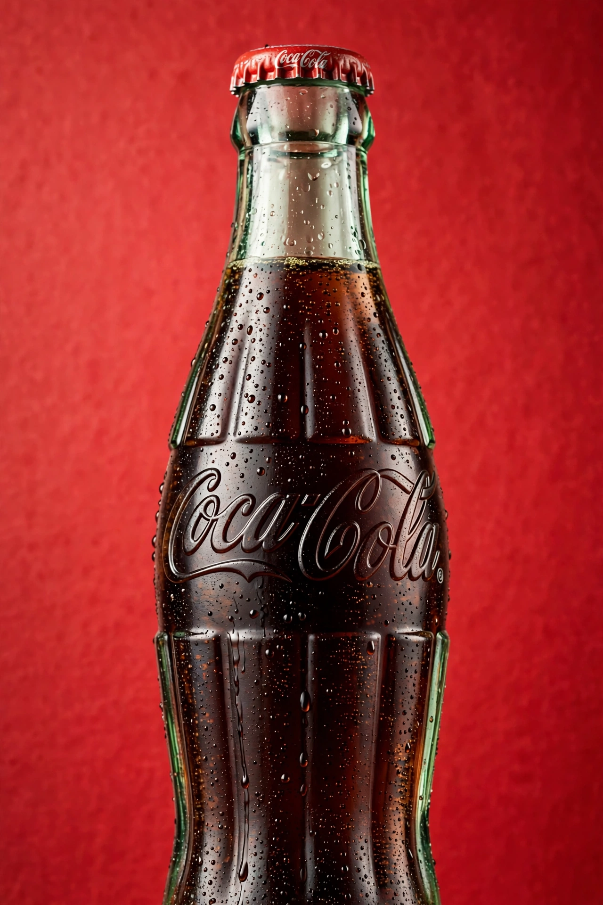

Coca-Cola

Image: a glass contour bottle of Coca-Cola with condensation, against a red background with the white Spencerian script logo | |
| Type | Carbonated soft drink |
|---|---|
| Manufacturer | The Coca-Cola Company |
| Country of origin | United States |
| Introduced | May 8, 1886 |
| Colour | Caramel |
| Flavour | Cola |
| Variants | Diet Coke, Coca-Cola Zero Sugar, Cherry, Vanilla, and others |
| Related products | Pepsi, RC Cola, Dr Pepper |
Coca-Cola, often simply Coke, is a carbonated soft drink produced by the Coca-Cola Company of Atlanta, Georgia. Originally marketed as a temperance drink and patent medicine, it has become the world's best-selling soft drink and one of the most recognisable brands on Earth.
History
Coca-Cola was invented in 1886 by pharmacist John Stith Pemberton, whose French Wine Coca was adapted after Atlanta enacted prohibition. Bookkeeper Frank M. Robinson named the drink and designed its Spencerian script logo. Businessman Asa Candler bought the formula and built the company through aggressive marketing; the contour bottle, designed in 1915 to be recognisable even in the dark or broken, became an icon.
The original formula contained coca leaf extract and kola nuts; cocaine was removed by the early 1900s and caffeine reduced. The secret recipe remains a famous trade secret. In 1985 the company replaced the formula with "New Coke", provoking a consumer backlash that forced the original's return as Coca-Cola Classic — now regarded as a classic marketing case study.
Marketing and cultural impact
Coca-Cola's advertising helped popularise the modern rosy-cheeked image of Santa Claus, and its slogans — from "The Pause That Refreshes" to "Taste the Feeling" — are landmarks of advertising history. The brand is consistently ranked among the world's most valuable.
Criticism
The drink and company have faced criticism over sugar and obesity, caffeine, water use in drought-prone regions, plastic waste, and historical labour and environmental disputes in some bottling territories.
See also
The Coca-Cola Company · New Coke · John Stith Pemberton · Cola wars